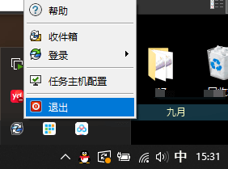

PDM库路径显示不更新
Windows 11 在2023年9月WIN更新 KB5030509后出现。
2024 SP1已修复，2024 SP0/2023 SP5/2022SP5 的补丁参考 QA00000308431

使用方法
1.下载附件的修复程序文件。
对于SOLIDWORKSPDM2023SP5客户端，请使用SWPDM2023SP05_HF1181214_Hotfix.zip。
对于SOLIDWORKSPDM2022SP5客户端，请使用SWPDM2022SP05_HF1181214_Hotfix.zip。
2.关闭所有打开的应用程序，右键单击通知区域中的SOLIDWORKS PDM图标，然后选择退出。
3.将下载的zip文件解压缩到本地文件夹。右键单击“HotFix HF1181214.bat”，选择以管理员身份运行。
4.按照提示中的说明进行操作。